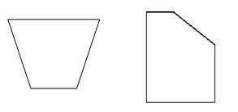

Creating a Non-rectangular Slab
Here is a question raised and answered by my colleagues Katsuaki Takamizawa and Phil Xia on creating and editing a slab. Some related topics that we already discussed are related to the analysis of the geometry of existing slabs, e.g. the slab boundary and its side faces, explorations of the geometry of other elements, the eave cut property of roof slabs, and how to edit a floor profile. Now let's look at this generic slab issue:
Question: In the user interface, we can use the shape editing tools to modify slab surfaces and to create non-rectangular slabs. Is it possible to create slabs like these through the API as well?

Also, can we define slope angles on these non-rectangular slabs?
Answer: You can modify the slab surface with the slab editor, accessible through the SlabShapeEditor property on the Floor class. The SDK sample SlabShapeEditing shows how to use it.
There is no way to modify the slope of an existing slab, but it can be specified when a new slab is created with NewSlab method:
public Floor NewSlab( CurveArray profile, Level level, Line slopedArrow, double slope, bool isStructural )The parameters are:
- profile: an array of planar lines and arcs that represent the horizontal profile of the slab.
- level: the level on which the slab is to be placed.
- slopedArrow: a line to control the sloped angle of the slab. It should be in the same face as the profile.
- slope: defines the slope.
- isStructural: specifies whether the slab is structural.
Many thanks to Phil and Katsu-san for this overview!